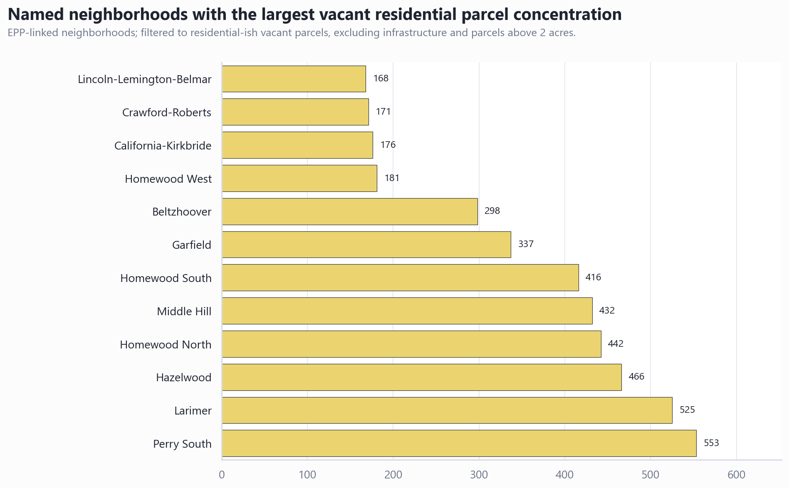
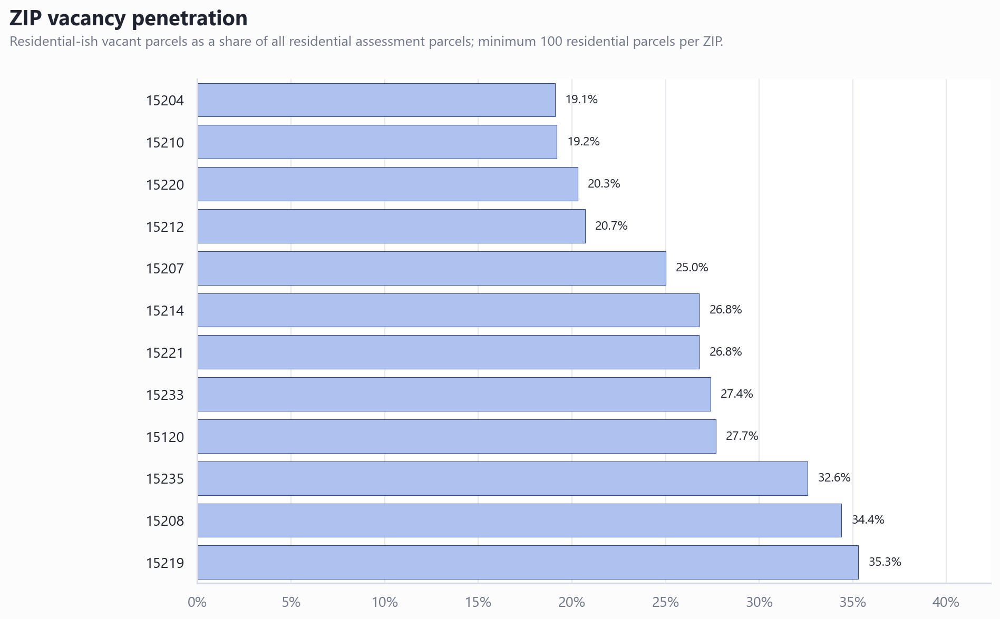

Vacant Land Triage Area Analysis
Executive Summary
- The strongest named-neighborhood concentrations are in Perry South, Larimer, Hazelwood, and Homewood. Perry South has 553 residential-ish vacant parcels in the EPP-linked neighborhood view.
- The highest ZIP-level residential vacancy penetration is in 15219.0. Its filtered vacant residential parcel share is 35.3% of residential assessment parcels.
- The map should use two scales. Zoomed-out views should compare ZIP penetration and named-neighborhood concentration; zoomed-in views should inspect parcel clusters in Homewood, Larimer, Perry South, Middle Hill, and Hazelwood.
Named neighborhoods show where to zoom in
Use this as the cluster-finding view. The named-neighborhood data comes from EPP-linked parcels, so it is best interpreted as concentration among the inventory that has neighborhood names, not a complete citywide neighborhood rate.

| Neighborhood | Residential vacant parcels | Vacant acres | 5+ prior-year parcels | EPP vacant-like share |
|---|---|---|---|---|
| Perry South | 553 | 39.79 | 148 | 88.4 |
| Larimer | 525 | 32.0 | 39 | 81.6 |
| Hazelwood | 466 | 31.06 | 18 | 89.3 |
| Homewood North | 442 | 27.08 | 46 | 87.7 |
| Middle Hill | 432 | 20.59 | 135 | 74.3 |
| Homewood South | 416 | 24.99 | 22 | 78.4 |
| Garfield | 337 | 19.39 | 18 | 80.0 |
| Beltzhoover | 298 | 20.41 | 20 | 86.3 |
ZIP penetration gives a cleaner rate denominator
Use this as the area-average view. ZIP penetration divides filtered residential-ish vacant parcels by all residential assessment parcels in the ZIP, which makes it more defensible as a rate.

| ZIP | Total residential parcels | Vacant parcels | Vacant penetration | Median building age |
|---|---|---|---|---|
| 15219.0 | 4232.0 | 1492.0 | 35.3 | 106.0 |
| 15208.0 | 5186.0 | 1782.0 | 34.4 | 106.0 |
| 15235.0 | 316.0 | 103.0 | 32.6 | 91.0 |
| 15120.0 | 801.0 | 222.0 | 27.7 | 69.0 |
| 15233.0 | 1353.0 | 371.0 | 27.4 | 126.0 |
| 15214.0 | 5233.0 | 1401.0 | 26.8 | 106.0 |
| 15221.0 | 2219.0 | 594.0 | 26.8 | 98.0 |
| 15207.0 | 6210.0 | 1552.0 | 25.0 | 105.0 |
Recommended next steps
- Keep the ArcGIS parcel map as the zoom-in diagnostic view.
- Add the ZIP chart and named-neighborhood chart to the layout as evidence panels.
- Create two map bookmarks: one wide city view and one zoomed-in Homewood/Hill District or Larimer/Perry South detail view.
- If a true neighborhood boundary table becomes available, replace the EPP concentration table with a true neighborhood vacancy-rate choropleth.
Caveats and assumptions
Residential-ish vacant parcels exclude obvious infrastructure, government, rail, utility, commercial, industrial, right-of-way, park, cemetery, air-rights, warehouse, and office categories, and exclude parcels above 2 acres. ZIP penetration uses assessment residential parcels as the denominator. Named-neighborhood concentration uses EPP-linked parcels because clean neighborhood names were not available in the all-parcel denominator.